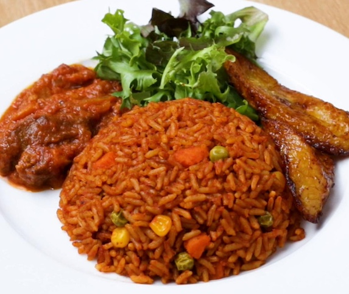
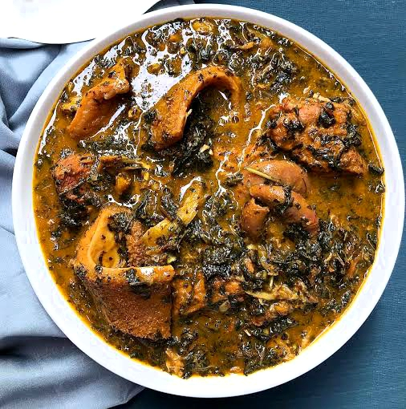

Recipe Book
Table of Contents
Egusi Soup

| Recipe |
Ingredients |
Steps |
Egusi Soup |
- Ground melon seeds (egusi)
- spinach or bitterleaf
- palm oil
- meat (beef/goat/fish)
- crayfish
- Stock fish
- Seasoning cubes
- Onions
- Peppers
|
- Fry egusi in palm oil
- add onions and crayfish
- Add meat and stock
- then simmer
- Add vegetables and cook until flavors meld.
- Add prawns or shrimp for a seafood twist. Serve with fufu or pounded yam
|
Jollof Rice

| Recipe |
Ingredients |
Steps |
Jollof Rice |
- Rice
- Tomatoes
- Onions
- Bell peppers
- Vegetable oil
- Chiken (optional)
- Seasoning cubes
- Thyme curry
- Bay leaves
|
- Blend tomatoes peppers, and onions; cook in oil until reduced.
- Add seasoning, thyme, and curry.
- Add rice and broth.
- Simmer until rice is tender.
- For smoky flavor, cook on low heat and let the rice at the bottom slightly caramelize.
|
Moi Moi

| Recipe |
Ingredients |
Steps |
Moi Moi |
- Bean
- Cray fish
- Onions
- Bell peppers
- Vegetable oil
- Seasoning cubes
|
- Blend soaked beans with peppers and onions.
- Add oil, crayfish, and seasoning.
- Steam in bowls or wraps until set and firm
- Add boiled eggs or fish in the center for variation.
|
Akara
| Recipe |
Ingredients |
Steps |
Akara |
- Black-eyed beans
- Salt
- scotch bonnet pepper
- Vegetable oil
- Seasoning cubes
|
- Blend peeled beans with onions and peppers
- Add seasoning, thyme, and curry
- Season with salt
- then fry small spoonfuls in hot oil until golden brown
- Serve as breakfast or snack with pap (ogi) or bread
|
Bitterleaf Soup

| Recipe |
Ingredients |
Steps |
Biterleaf Soup |
- cocoyam paste
- Bitterleaf
- palm oil
- Dry fish
- Assorted meat
- seasoning cubes
- Crayfish
|
- Boil meat and dry fish with seasonings
- Add palm oil, cocoyam paste as thickener, and washed bitterleaf
- Cook until well blended.
- Substitute spinach if bitterleaf is unavailable
- Best served with pounded yam
|